Электромонтаж · Мончегорск · июль–август 2026
Как локальному электрику собрать и запустить первый месяц регулярного контента
Для «Электрик Мончегорск» выстроили ленту с пользой, реальными работами, разбором опасных мифов и понятными предложениями. Не десять одинаковых объявлений, а связанный маршрут от первого доверия к обращению.
Контент-план и визуал утверждены. Публикации во ВКонтакте запущены по графику с 30 июля по 17 августа.
Кейс показывает запущенный контент‑календарь. Коммерческие показатели в проекте не измерялись.


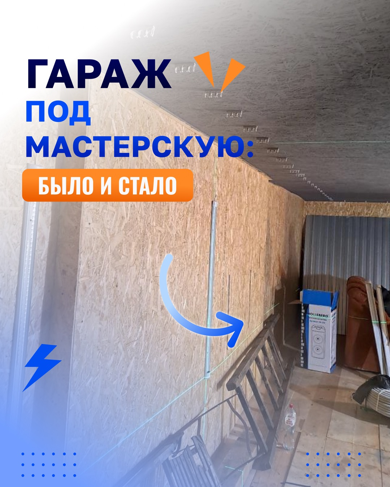
Маркетинговая задача
Сделать локального специалиста понятным ещё до первого звонка
У бизнеса не было готовой дизайн-системы. Нужны были регулярность, полезные темы, реальные доказательства работ и понятная причина обратиться именно к этому мастеру.
Какие вопросы закрывает контент
- как выбрать электрика и не платить за переделки;
- когда старая проводка становится риском;
- как проверить работу перед приёмкой;
- как планировать розетки, автоматы и нагрузку;
- можно ли доверить мастеру реальный сложный объект.
Как выстроили доверие
Сначала даём прикладную пользу. Затем показываем выполненные объекты и объясняем решения. После этого снимаем страх непредсказуемой цены через замер и фиксированную смету.
Логика месяца: польза → доказательство → безопасность → понятные условия → обращение.
Польза
Выбор мастера, приёмка, проводка в деревянном доме и планирование розеток.
Работы
Замена аварийной проводки и полноценная электрика в гараже-мастерской.
Мифы
Опасность старой проводки и неверное решение поставить автомат мощнее.
Предложения
Замер, фиксированная смета, материалы и понятный порядок оплаты.
Мини-прогрев
Разобрать страх растущей сметы и привести к объяснению условий.
Проверка качества в реальной работе
Не спрятали ошибку с объектом — исправили её до утверждения
Сильный процесс виден не по обещанию «всё идеально», а по тому, как команда ловит и исправляет несоответствие до публикации.
Что произошло
В первой версии карусели №7 стояли фотографии другого гаража. Клиент уточнил, какой объект нужно показать.
Что сделали
- заменили фотографии на материалы нужного гаража;
- сохранили смысл «было и стало»;
- проверили все семь слайдов после замены;
- получили утверждение визуала и перешли к публикации.
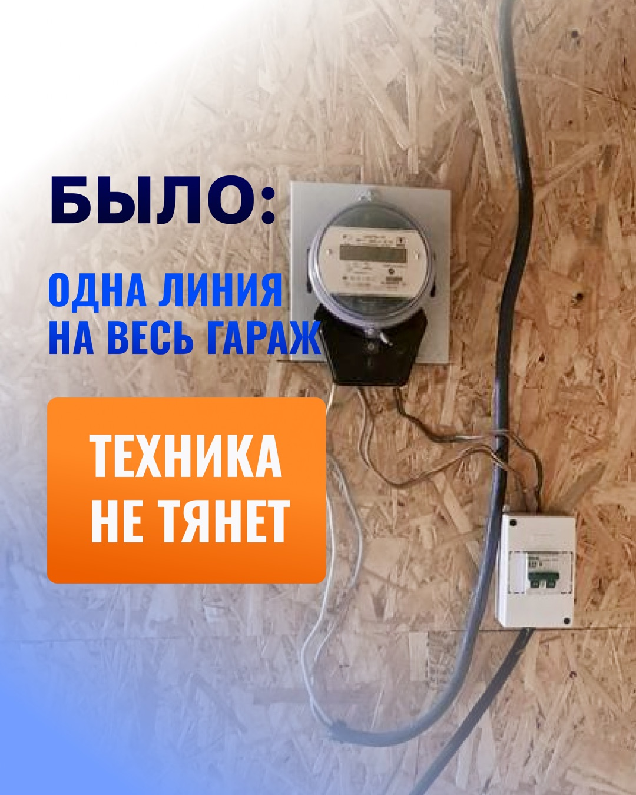
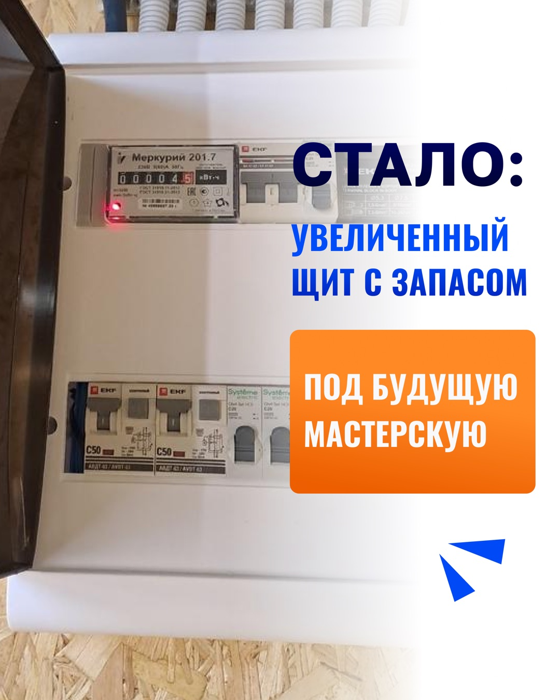
Готовый продукт целиком
Все публикации, карусели и истории — без выборочной витрины
Откройте план месяца, ленту, обе карусели или весь мини-прогрев. Макеты показаны в исходных пропорциях без обрезки.
10 выходов · раз в два дня
Календарь с 30 июля по 17 августа
Каждая публикация была загружена во ВКонтакте на 08:00. Последний выход подтверждён на 17 августа.
- Как выбрать электрика без переделокПольза и снижение риска · пост
- Бредова, 19: замена аварийной проводкиРеальная работа · пост
- Старую проводку можно не менять?Разбор мифа · пост
- Как принять работу электрикаСохраняемый чек-лист · карусель
- Бесплатный замер и фиксированная сметаПредложение периода проекта · пост
- Проводка в деревянном домеВыбор решения · пост
- Гараж под мастерскую: было и сталоРеальный объект · карусель
- Выбивает автомат? Не ставьте мощнееРазбор опасного мифа · пост
- Сколько розеток нужно на самом делеПрактическое планирование · пост
- Материал наш — оплата после работПредложение периода проекта · пост
Лента из 10 публикаций
Единый визуальный язык для локального специалиста
Нажмите на любой макет, чтобы открыть его крупно. Для каруселей здесь показаны обложки; все 14 слайдов находятся в соседней вкладке.
2 карусели · 14 слайдов
Чек-лист для сохранения и реальный объект для доверия
Первая карусель помогает заказчику принять работу. Вторая показывает конкретную мастерскую в гараже и исправленные фотографии нужного объекта.
Публикация 04 · 7 слайдов
Как принять работу электрика: чек-лист
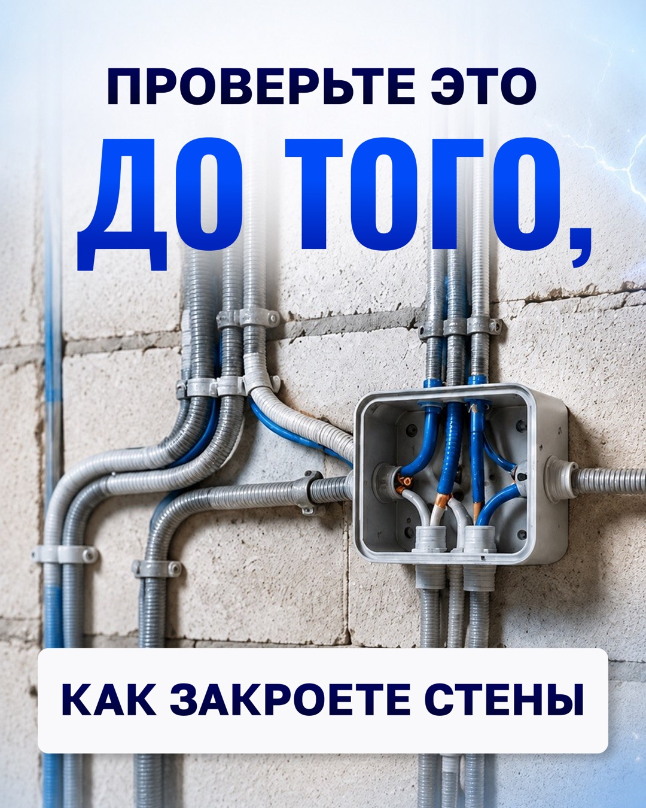
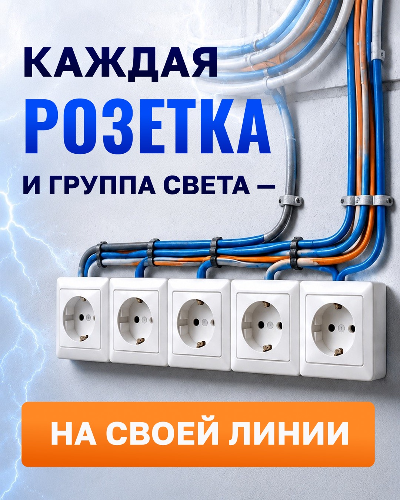
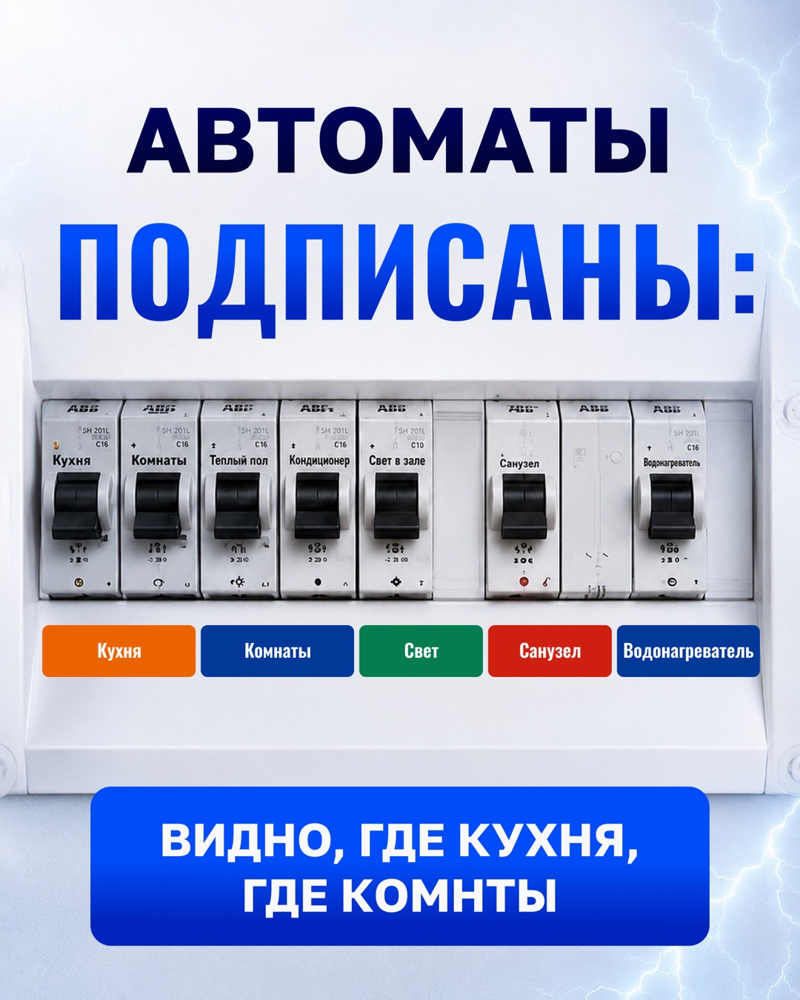
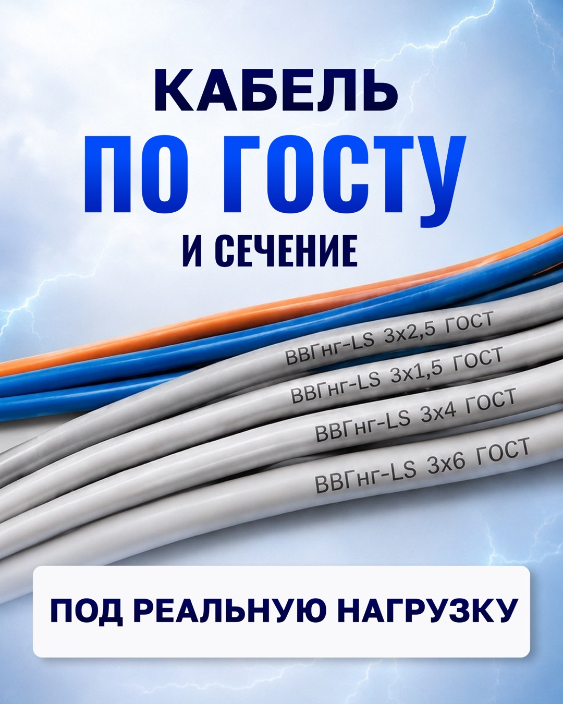
1 / 7
Публикация 07 · 7 слайдов
Гараж под мастерскую: было и стало
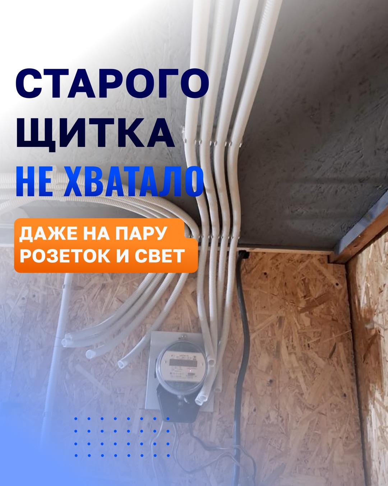
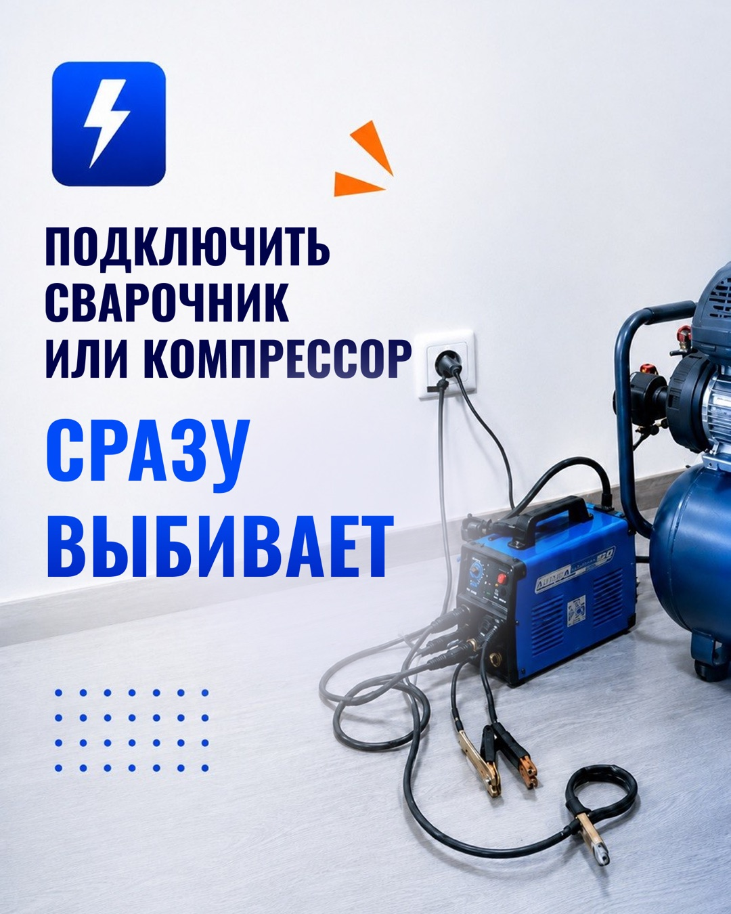
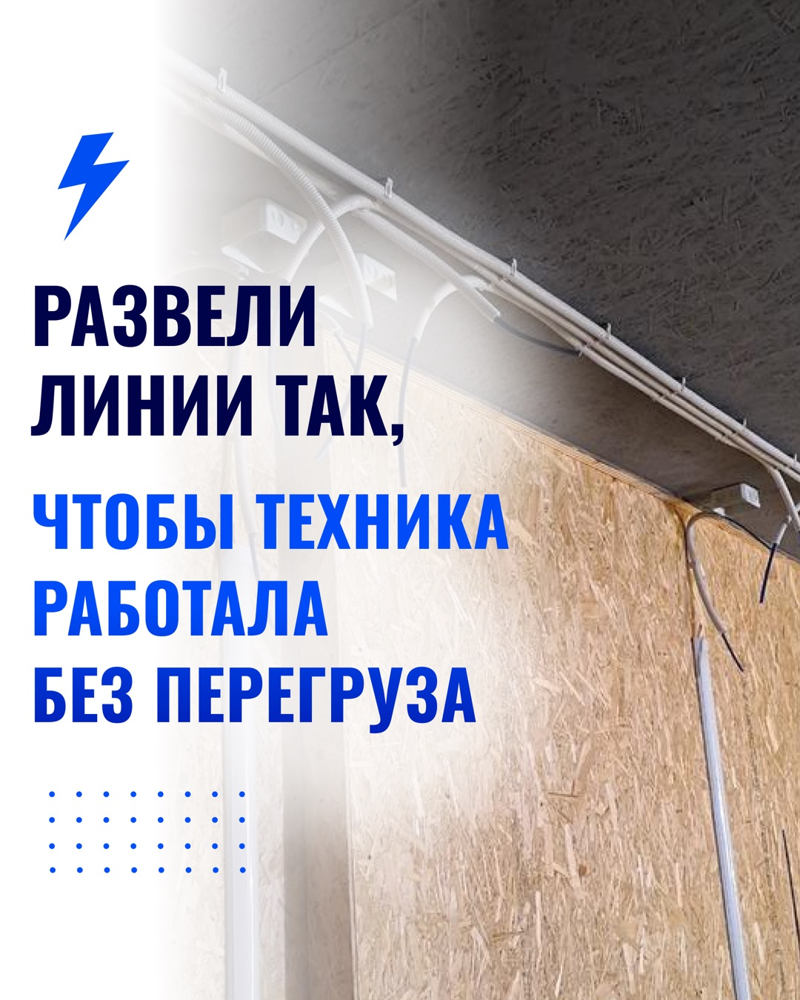
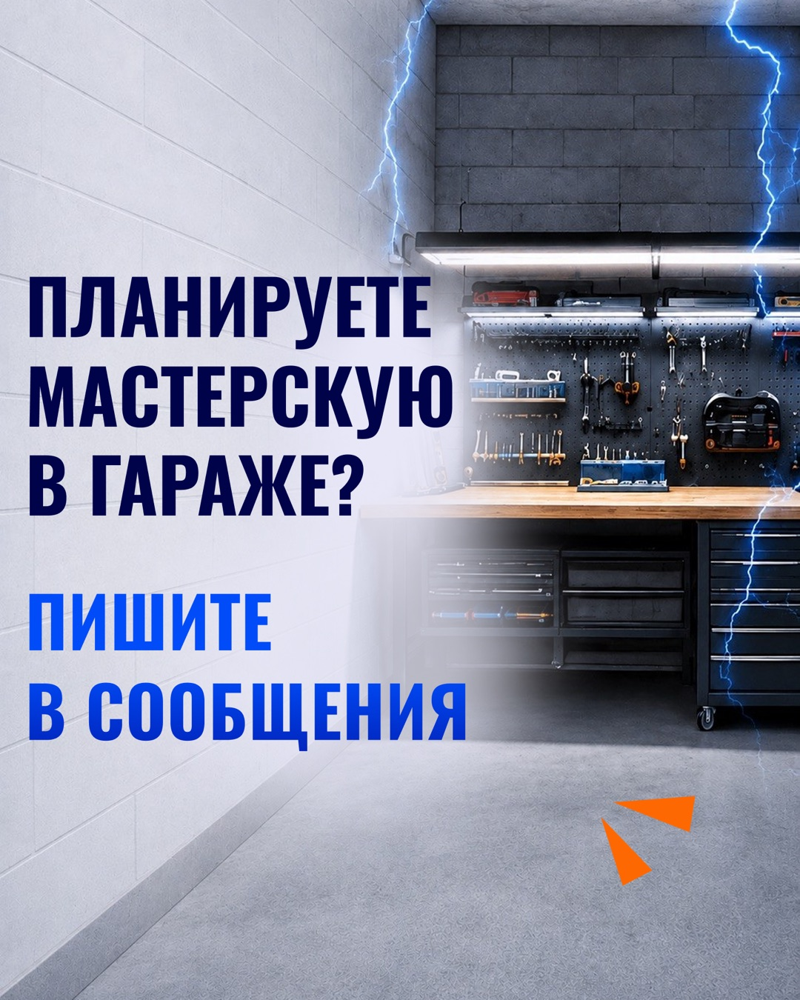
1 / 7
Один мини-прогрев · 5 экранов
От страха растущей сметы к понятному правилу
Истории сначала поднимают знакомую боль, затем объясняют причину и подводят к решению: замерить объект до расчёта и зафиксировать сумму.
Итог проекта
Готовый продукт и подтверждённый запуск
На странице видны объём, маркетинговая логика, дизайн и запущенный календарь публикаций.
Что сделали
- утверждённые контент-план, тексты и визуал;
- 8 одиночных постов и 2 карусели по 7 слайдов;
- мини-прогрев из 5 статичных историй;
- 27 финальных исходников: 22 формата 4:5 и 5 формата 9:16;
- загрузка во ВКонтакте и запуск по расписанию.
Итог проекта
Кейс показывает готовый комплект и запуск во ВКонтакте. Коммерческие показатели не измерялись.
Условия замера, фиксированной сметы, материалов и оплаты внутри макетов относятся к периоду проекта и не являются текущей публичной офертой.
Нужен регулярный контент для локального бизнеса?
Польза, реальные доказательства и предложения — в одном готовом месяце
Маркетолог собирает логику, редактор пишет тексты, дизайнер оформляет, менеджер ведёт процесс, а команда загружает готовые публикации в календарь.